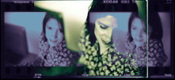

|  | ||||
b e a t r i c e a i s p u r o |
||||
| 01. 08. 03 I learned of the opening for a graphic designer/technical coordinator with the Cesar E. Chavez Foundation through monster.com. I received my Bachelor of Arts degree from CSULB in Journalism/Public Relations in 1991. I have been working in web and graphic design for the past ten years, while keeping abreast of the latest software and design techniques. I have excellent organizational and analytical skills, and I can set priorities and meet deadlines in a professional manner. As my resume shows, I am well versed in html and design programs including Photoshop, Illustrator, Quark, Pagemaker, and Dreamweaver. I believe my web design skills, my project management experience, and my design sense as it applies to typography, photography, and creative imagery will be a valuable asset to your group. As the first designer and webmaster at Caltech, I collaborated extensively with staff and faculty in creating and developing promotional material, both online and in print. I served as designer and editor of the original Caltech Alumni Newsletter and also taught classes for our staff, faculty, and students in constructing web pages using HTML code, image scanning/manipulation, and creative design. In addition, as a native Spanish speaker, I was responsible for translating documents and facilitating bilingual discussions for our geologists conducting research in Mexico. At Shopsports.com, I translated all store web sites into Spanish. January through July of last year, I traveled through Europe–Sweden, France, Italy, Holland, Spain, Greece, Germany, and Switzerland. During that time, I represented Entergate Communications at the COMDEX computer show in Goteburg, Sweden, developed designs for clients in Italy, Spain, and Holland, and took hundreds of digital photographs of classic architecture, art, and people. I was privileged to visit many impressive museums like the Louvre in Paris and the Uffizi in Florence. All of these experiences have filled me with fresh creative insights, ideas, and perspectives. Now that I have returned, I am full of energy and inspiration. I am seeking full-time work and a chance to settle down. I look forward to speaking with you after you have had an opportunity to review my qualifications. Sincerely, |
||||
|
|
||||